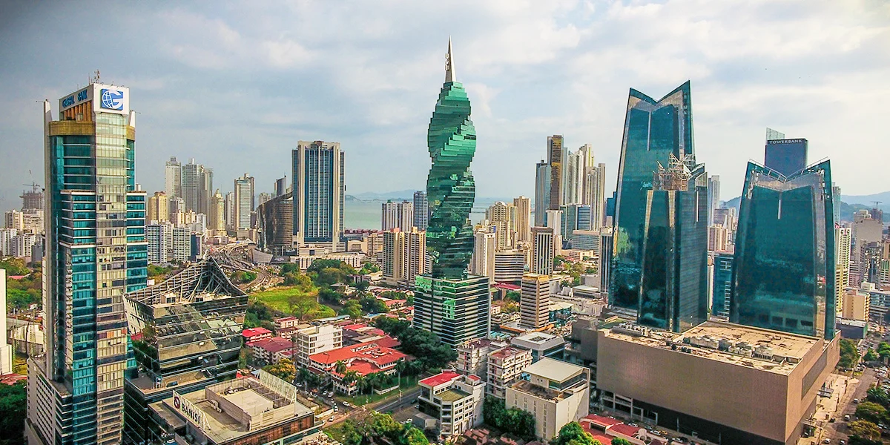
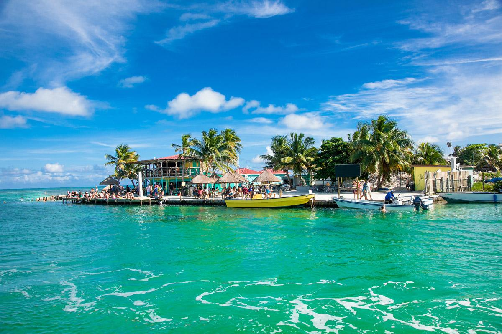
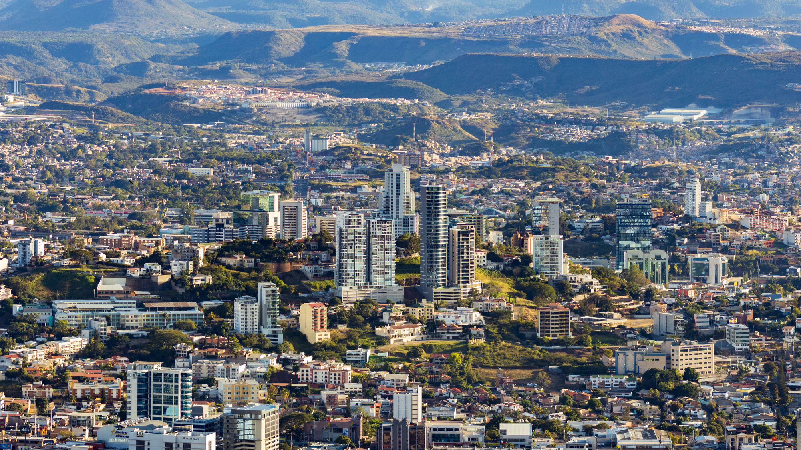
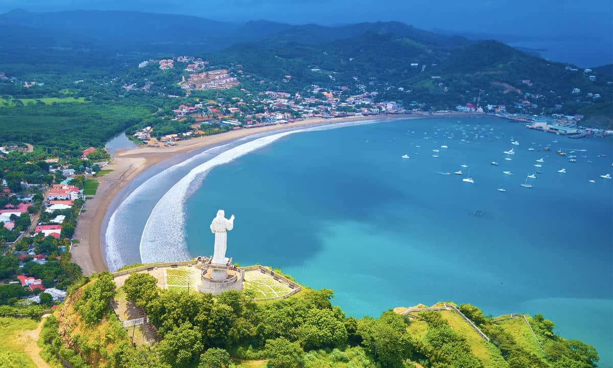

Guatemala
 >
>
Guatemala, el corazón del mundo maya, es un país de
contrastes donde se mezcla la historia precolombina con la modernidad. Sus
impresionantes volcanes, lagos cristalinos y bosques nubosos ofrecen una
experiencia única a los visitantes. Antigua Guatemala, una ciudad colonial
con calles empedradas y edificios históricos, es uno de los destinos más
populares. Además, el Lago de Atitlán, rodeado por montañas y pueblos
indígenas, es considerado uno de los lagos más bellos del mundo.
Más sobre Guatemala
El Salvador

El Salvador, el país más pequeño de Centroamérica, ofrece una
mezcla perfecta de montañas, playas y cultura. Aunque es pequeño en tamaño,
su variedad geográfica es impresionante. Desde las olas perfectas para
surfistas en playas como El Tunco, hasta las rutas de montaña como la Ruta de
las Flores, donde se pueden visitar pueblos pintorescos y disfrutar de la
gastronomía local. La capital, San Salvador, combina lo moderno con lo
tradicional, ofreciendo tanto rascacielos como mercados locales vibrantes.
Más sobre El Salvador
Costa Rica

Costa Rica es conocida mundialmente por su enfoque en la
sostenibilidad y la protección del medio ambiente. Este país sin ejército
desde 1949, dedica gran parte de sus recursos a la conservación de la
naturaleza. Es el hogar de más del 5% de la biodiversidad mundial, con
parques nacionales que albergan una vasta variedad de flora y fauna. Los
turistas disfrutan de actividades como el senderismo en la selva tropical, el
avistamiento de aves, y la visita a las playas del Caribe y del Pacífico.
Más sobre Costa Rica
Panamá

Panamá es famoso por su canal, una de las obras de ingeniería
más importantes del mundo, que conecta los océanos Atlántico y Pacífico. Pero
más allá del canal, Panamá ofrece una mezcla fascinante de modernidad y
tradición. La Ciudad de Panamá, con su impresionante horizonte de
rascacielos, contrasta con el Casco Viejo, el distrito histórico con calles
adoquinadas y arquitectura colonial. Además, los turistas pueden explorar las
Islas de San Blas, habitadas por los indígenas Guna Yala, o disfrutar de las
montañas y selvas tropicales de la región de Boquete.
Más sobre Panamá
Belice

Belice es un país de América Central, capital es Belmopán, y es conocido por ser
el único país de la región con el inglés como idioma oficial, aunque el español
también es ampliamente hablado. Tiene una rica historia maya, con numerosas
ruinas, y es hogar del sistema arrecifal mesoamericano, el segundo arrecife
de coral más grande del mundo. Su economía se basa principalmente en los servicios
y el turismo, este último como la segunda industria más importante del país.
Más sobre Belice
Honduras

Imagine un lugar donde los antiguos secretos de una civilización perdida
yacen ocultos en la espesura de la jungla, donde el arrecife de coral más
grande del hemisferio occidental alberga un mundo submarino de colores deslumbrantes,
y donde playas de arena blanca y aguas turquesas se mezclan con la calidez de su gente.
Ese lugar es Honduras, un destino auténtico y lleno de aventuras esperando a ser explorado.
Más sobre Honduras
Nicaragua

Nicaragua, la tierra de lagos y volcanes, te espera con una autenticidad
que roba el corazón; desde pasear por las coloridas calles coloniales de
Granada y León, hasta deslizarse por las olas del Pacífico en San Juan del
Sur, surfear en las fumarolas del volcán Cerro Negro o perderse en la naturaleza
prístina de la selva de Indio Maíz. Es un país de raw beauty y cultura vibrante,
ideal para el viajero que busca aventuras auténticas lejos de las multitudes.
Más sobre Nicaragua